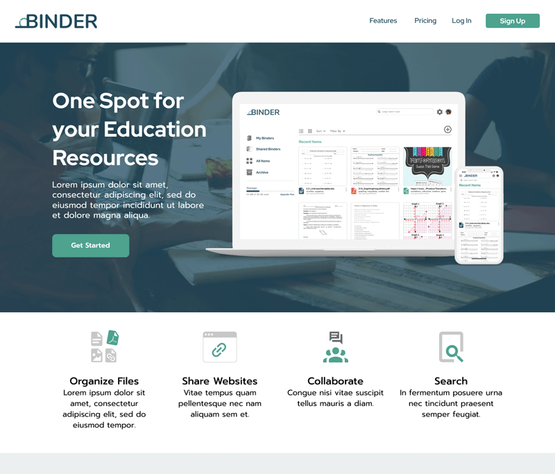
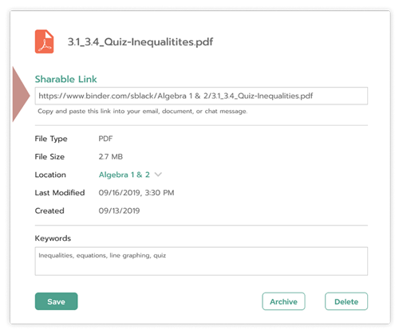

High Fidelity Prototype

With the brand established, I built out the high fidelity prototype, ensuring it stays aligned with the brand. To ensure positive design designs were made, a series of preference tests were conducted on three elements. Adjustments were made to the style guide during this process according to what worked visually and practically during the design process with the preference and usability testing.
CTA Button Shape
Text Treatment
File Detail Modal Window Layout

Usability Testing & Iterations
With the UI elements tested and revised, the next step was to conduct user testing and test out those changes. The first round of usability testing consisted of four tasks:
Tasks
- reset password
- add a new file
- navigate to a file, share & delete a file
- reply to a comment on a document
The adjustments made after the first lo-fi usability test were a success in the initial round of hi-fi usability testing, and users could clearly distinguish the functionality.
Users were able to successfully complete all of the tasks except for one, which was adding a direct reply to a comment. The results were surprising and the degree of confusion was unexpected.
The two main pain points here were:
- Not knowing where to click in order to directly reply to a comment
- Not knowing that you are typing a reply to a specific comment
Iterations were made based on these results and feedback. Verbal prompt on the button was changed to “post” and a more distinguishable comment box was added to appear directly under the comment.
Additional Iterations and Testing
In order to figure out the root of the issue and ensure the next round of iterations are successful, I conducted additional navigation and preference tests.
Navigation Testing
Users were shown the refined layouts of the commenting section and instructed to reply to a most recent comment.

Only 1 out of 10 users clicked in the correct spot. Most users clicked on the general comment box.
A/B Testing
- A follow-up question asked if the alternative design with the word “reply” added makes the task more clear. 70% of the users indicated that it does, and one user did not notice a difference in design.
- I also conducted a preference test on the comment box, testing icon and text prompt.
Final Outcome
I was able to use this feedback to fine tune my product.
- The word “reply” was added to the icon
- CTA text for the comment boxes were changed to “post”
- For the general new comment box, the word “new” was added to the pre-filled text to help communicate that it’s for new comments